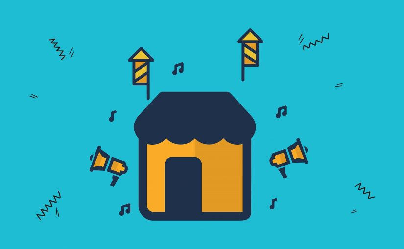

Hay guys, Bertemu lagi nih. Terimakasih loh sudah mau mampir ke website saya. Sudah merelakan waktu anda untuk berkunjung kemari. Untuk anda yang hobinya dunia maya, ini nih pas banget tempat untuk menimba ilmu. Tempat yang cocok untuk kalian. Semua informasi saya menyediakannya di sini, dan itu kusus untuk anda.

Tidak bisa dipungkiri, dua sistem operasi mobile paling mendominasi pasar saat ini adalah Android dan iOS. Android dimiliki Google dengan konsep sistem terbuka yang memungkinkan setiap vendor bebas memakainya. Sementara, iOS adalah sistem operasi eksklusif yang hanya digunakan khusus untuk perangkat mobile dari Apple seperti iPhone, iPad, dan iPod Touch.
Karena eksklusivitas ini, harga iPhone memiliki banderol harga yang tinggi. Padahal harga biaya produksinya tidak terlalu tinggi. Seperti contohnya iPhne XS Max yang memiliki biaya produksi 35% dari harga resminya atau iPhone 6 Plus yang memiliki ongkos produksi 28% dari harga jual. Soal studi perbandingan harga ongkos produksi dan harga jual produk iPhone bisa disimak pada infografik hasil penelitian dari Cuponation berikut ini.
Lantas apa yang membuat iPhone bisa memiliki banderol harga yang mahal? Selain karena eksklusivitas iOS, faktor R&D dan value brand dari Apple membuat iPhone jadi mahal. Sistem operasi iOS sendiri tentu saja adalah hasil kerja dari Apple dari hasil R&D sehingga membuat iOS cenderung lebih eksklusif.
Dengan perkembangan teknologi seperti sekarang, iOS terus menghadirkan berbagai versi. Tiap tahun selalu ada versi terbaru dari iOS yang biasanya berbarengan hadir dengan perangkat iPhone terbaru atau perangkat dari Apple lainnya seperti iPad. Lantas, bagaimana perkembangan iOS dari kelahirannya sampai sekarang? Untuk menjawab pertanyaan tersebut, simak daftar penjelasan iOS dari versi awal sampai terbaru.
- iOS 1
- iOS 2
- iOS 3
- iOS 4
- iOS 5
- Notifications Center, hadirnya notifikasi satu pusat yang bisa muncul di saat ponsel dalam keadaan "lock screen". Fitur ini masih banyak dipertahankan dan diadopsi oleh UI lain di Android.
- iMessages, fitur pesan khusus di iOS yang memungkinkan pengguna bisa mengirimkan teks, foto, gambar GIF, video, kontak, dan lokasi. Fitur lainnya adalah dukungan pesan ke grup, fitur pemberitahuan pesan terkirim, dan pesan terbaca. Selain itu, iMessages juga dapat dibaca dari perangkat Apple lain dengan menggunakan satu identitas Apple ID.
- iCloud, fitur penyimpanan awan dari Apple ini hadir pertama kali di iOS 5. Fitur ini menawarkan semua kontak, foto, aplikasi, catatan dan lainnya dapat memiliki cadangan data alias tersimpan di penyimpanan awan (iCloud backup data).
- Game Center, fitur ini adalah fitur yang berfungsi untuk kebutuhan bermain gim di iOS. Selain notifcations center, iOS 5juga sudah memiliki fitur Game Center yang di dalamnya memiliki beberapa fitur menarik seperti rekomendasi gim, profil yang dapat dimunculkan ke publik atau pribadi, pembelian gim, dan juga jumlah poin yang didapatkan dari sebuah gim.
- iOS 6
- iOS 7
- iOS 8
- iOS 9
- iOS 10
- iOS 11
- iOS 12
Tahun 2007, Apple memperkenalkan pertamakalinya sebuah perangkat pintar, iPhone generasi pertama atau kemudian sering dikenal sebagai iPhone 2G. Ponsel ini hadir dengan mengusung iPhone OS versi pertama atau iPhone OS 1. Sistem operasi ini merupakan sistem operasi yang dibangun dengan basis kode yang sama dengan OS X.
Pada versi pertamanya, tidak terdapat toko aplikasi atau App Store yang dikenal seperti sekarang. Saat itu, iPhone OS 1 hadir menawarkan berbagai aplikasi bawaan yang dibuat oleh tim Apple. Beberapa aplikasi seperti peramban atau browser, kalkulator, bahkan sampai pemutar musik sudah hadir di iPhone OS 1.
Sistem operasi pertama ini tidak memiliki nama resmi. Saat itu, hanya disebut sebagai iPhone OS 1. Adapun OS versi pertama punya pembaruan yakni iPhone OS 1.1 yang membawa dukungan untukiPod Touch (1st generation). Versi akhir iOS ini adalah iOS 1.1.5 yang kemudian orang menyebut sebagai iPhone OS 1 saja.
Pada 2008, iOS 2 hadir bersamaan dengan perangkat iPhone 3G. Perangkat inilah yang kemudian membuat nama Apple naik lewat seri iPhone-nya. Terlebih di seri ini mulai diperkenalkan toko aplikasi App Store, toko aplikasi yang masih hadir di perangkat ekosistem Apple.
Hadirnya toko aplikasi jelas membuat pengguna iPhone 3G dapat menambah koleksi aplikasinya dengan mengunduh langsung dari toko aplikasi, iPhone App Store. Selain itu, di versi ini banyak fitur yang sudah disematkan seperti dukungan iPod Touch generasi kedua, security note, perbaikan bug, dan lainnya.
Tahun 2009, Apple menghadirkan penerus dari iPhone 3G yakni iPhone 3GS. Perangkat ini hadir dengan pembaruan sistem operasi iOS yang kemudian membuat perangkat ini disebut juga iPhone OS 3.0. Pada perangkat inilah iOS mengalami banyak peningkatan fitur.
Fitur yang hadir di iPhone OS 3.0 sangat dibutuhkan kala itu. Sebut saja fitur seperti push notification, keyboard landscpae, voice note, IMAP, shake to shuffle. MMS, dan kompas. Fitur yang jadi perhatian dan berguna sampai sekarang adalah hadirnya fitur in-app purchase (IAP) atau pembayaran dalam aplikasi dan fitur copy paste. Fitur salin-tempel inilah awalnya diperkenalkan di perangkat iPhone OS 3.0.
Sistem operasi iOS 3.0 ini sendiri mendukung perangkaT Apple iPhone generasi sebelumnya, termasuk iPhone original alias generasi pertama. Meskipun tentu ada beberapa fitur yang dibatasi. Selai itu, versi ini juga memiliki pembaruan yakni 3.1 yang menghadirkan fitur Anti-Phising dan banyak perbaikan. Ada juga pembaruan terakhir yakni versi 3.2 yang menghadirkan dukungan untuk perangkat iPad generasi pertama.
Perubahan besar dilakukan Apple pada sistem operasi miliknya. Tidak ada lagi sebutan iPhone OS. Mulai dari versi 4, Apple secara resmi mengganti iPhone OS dengan iOS saja. Karena itu, versi 4 disebut sebagai iOS 4 saja. Sistem operasi ini dihadirkan berbarengan dengan perangkat iPhone 4 di tahun 2010.
Kehadiran iPhone 4 dan iOS 4 ini jadi langkah selanjutnya yang membuat nama Apple kian melambung. Betapa tidak, fitur-fitur keren mulai dihadirkan di versi keempat ini. Beberapa fitur tersebut diantaranya adalah kemampuan multitasking yang lebih efisien terhadap pemakaian baterai, fitur menghidupkan dan menyalakan data seluler, playlist pada iTunes yang lebih kreatif, dan juga dukungan fitur pada foto.
Beberapa fitur lainnya yang hadir di iOS 4 adalah FaceTime yang kini memiliki kemampuan untuk video calling menggunakan wifi. Fitur lainnya yaitu sinkronisasi iBooks dengan iTunes, peningkatan kemampuan kamera seperti hadirnya landscape mode dan kemampuan 5x digital zoom. Fitur autofocus dengan cara tap saat rekaman video juga sudah hadir di iOS 4.
21 Juni 2011, Apple memperkenalkan iOS 5. Sistem operasi ini dihadirkan bersamaan dengan hadirnya iPhone 4S. Di versi ini, iOS menghadirkan beberapa fitur penting yang kemudian jadi identitas dari sistem operasi besutan Apple ini. Beberapa fitur yang dihadirkan di iOS 5 adalah sebagai berikut:
Selain fitur-fitur utama tersebut, iOS 5 juga menghadirkan berbagai fitur menarik lainnya seperti peningkatan fitur di kamera, integrasi dengan aplikasi Twitter, penambahan berbagai fitur di Music, sampai fitur untuk mengaktivasi iPhone-nya tanpa memakai laptop/komputer. Tidak hanya itu, Apple juga memperkenalkan Siri, asisten pintar milik Apple di IOS 5.
Setahun setelah iOS 5 rilis, tepatnya pada 11 Juni 2012, Apple memperkenalkan iOS 6. Kehadiran iOS 6 disertai dengan diperkenalkannya perangkat yang mengusung iOS 6, yakni iPhone 5, iPoud Touch generasi kelima, dan iPad 4. Selain itu, iOS 6 ini juga hadir sebagai pembaruan untuk perangkat Apple generasi sebelumnya seperti iPhone 4, iPhone 3S, iPod Touch, iPad 3 dan IPad Mini generasi pertama.
Pada iOS 6 ini, tidak ada fitur yang benar-benar baru. Fitur yang ada hanya berupa peningkatan dari aplikasi yang sudah ada seperti peningkatan pada kamera, Facetime, tampilan desain yang berbeda untuk beberapa aplikasi, dan juga perubahan menu "setting".
Fitur yang paling jadi sorotan dan benar-benar baru adalah Apple Maps. Kehadiran aplikasi ini sebagai pengganti Google Maps, aplikasi peta sejuta umat. Sayangnya kehadiran Apple Maps tidak disambut baik, terlebih karena performanya tidak lebih baik dari Google Maps.
10 Juni 2013, Apple mengumumkan kehadiran iOS 7. Sistem operasi ini dihadirkan bersamaan dengan perangkat iPhone 5C dan iPhone 5S. Beberapa perangkat generasi sebelumnya juga mendapatkan pembaruan iOS 7. Sayangnya, iPhone 3GS ke bawah sudah tidak mendapat dukungan pembaruan iOS lagi.
Pembaruan dari iOS 6 ke iOS 7 cukup besar dari sisi desain tetapi tidak dari sisi fitur. Bisa dibilang, iOS 7 ini adalah pembaruan iOS yang menitikberatkan pada tampilan desain. Hal ini terlihat dari tampilan antarmuka iOS 7 yang hadir dengan flat design dan menggunakan font System Helvetica Neue Regular.
Selain desain, hal mencolok dari iOS 7 hadirnya Touch ID yang diperkenalkan di perangkat iPhone 5S. Sementara untuk fitur tambahan atau perbaikan terjadi pada aplikasi semacam AirDrop, Control Center, Safari, Siri, Facetime, Apple Maps, App Store, dan beberapa pembaruan di aplikasi lain. Karena hadir dengan desain yang berbeda, Home Screen di ponsel ini juga tampak berbeda alias memiliki tampilan serupa flat design.
Pada 2 Juni 2014, Apple mengumumkan kehadiran iOS 8. Sistem operasi ini baru bisa dinikmati pada 17 September 2014 saat iPhone 6 dan iPhone 6 Plus diperkenalkan. Artinya, kedua ponsel ini sudah hadir dengan iOS 8. Selain itu, iOS 8 juga hadir ke perangkat iPhone generasi sebelumnya dan juga perangkat iPad Touch generasi keenam, iPad 3, iPad Air 2 dan iPad Mini. Sayangnya, iPhone 4 sduah tidak mendapat pembaruan ini.
Desain iOS 8 masih mempertahankan konsep flat design iOS 7. Hanya saja kali ini desain antarmukanya terlihat lebih flat dibandingkan antarmuka yang ada di iOS 7. Selain tampilan desain yang lebih flat, iOS 8 hadir dengan beberapa fitur menarik seperti iCloud Drive dan hadirnya aplikasi untuk berbagai konten dengan keluarga alias family sharing.
Selain itu, iOS 8 juga hadir dengan sistem pengetikan yang lebih cepat lewat fitur Quicktype, aktivasi Siri dengan hanya memakai suara saja, dan juga kemampuan pesan yang lebih ditingkatkan fiturnya. Yang menarik, iOS 8 menghadirkan aplikasi kesehatan bernama Health. Fitur Health ini membantu membaca kesehatan tubuh meliputi detak jantung, kalori, gula darah, kolesterol, dan lainnya.
Juni 2015, Apple mengumumkan kehadiran iOS 9. Sistem operasi ini kemudian dirilis pada 16 September 2015 bersamaan dengan perangkat iPhone 6S, iPhone 6S Plus dan iPad Mini 4. Sistem operasi ini juga mendukung perangkat iPhone lama sampai generasi iPhone 4S.
Sistem operasi yang hadir dengan kode nama Monarch ini sendiri hadir dengan tampilan desain yang tidak terlalu jauh berbeda dengan iOS 8. Tampilan desainnya memang tidak berubah drastis karena yang ditonjolkan dari iOS 9 adalah penambahan fitur dan hadirnya aplikasi baru.
Fitur-fitur yang ditambahkan di iOS 9 diantaranya adalah Siri yang kini hadir dengan antarmuka yang lebih berwarna mirip dengan Apple Watch. Siri juga kini bisa bicara menggunakan aksen bahasa Inggris dari daerah tertentu. Selain itu, Touch ID kini lebih aman dengan sistem kode sandi 6 digit. Sebelumnya Touch ID memiliki sistem kode sandi 4 digit saja. Tidak hanya itu, iOS 9 juga memperkenalkan sistem 3D Touch.
Fitur lainnya dari iOS 9 adalah hadirnya aplikasi Carplay serta mode slide-over serta split-screen untuk perangkat iPad. Beberapa pembaruan juga dihadirkan seperti aplikasi Note yang memiliki beberapa pembaruan dan Maps yang memiliki petunjuk arah untuk transit.
Tidak ketinggalan, iOS 9 hadir dengan aplikasi baru bernama News yang merupakan aplikasi berita. Aplikasi Passbook yang sudah hadir sejak lama kini berganti nama menjadi Wallet. Selain itu, Apple juga menghadirkan pembaruan untuk beberapa aplikasi yang bertujuan untuk meningkatkan performa.
Pada 13 September 2016, Apple menghadirkan iOS 10 ke publik bersamaan dengan iPhone 7 dan iPhone 7 Plus. Kehadiran iOS 10 sudah diumumkan sebelumnya pada gelaran Apple Worldwide Developers Conference (WWDC) yang berlangsung pada 13 Juni 2016.
Sistem operasi penerus iOS 9 ini juga mendukung beberapa perangkat Apple sebelumnya. Hanya saja tidak semua perangkat didukung penuh, ada yang dukungannya terbatas seperti iPhone 5, iPhone 5C, dan iPad 4. Keterbatasan ini karena perangkat tersebut masih memakai prosesor dengan arsitektur 32-bit. Sementara iOS 10 ini fiturnya hanya didukung penuh oleh ponsel dengan minimal prosesor A5 atau A5X yang berbasis 64-bit.
Lantas, apa yang ditawarkan dari iOS 10? Ada banyak fitur menarik yang ditawarkan dari iOS 10 ini. Salah satunya adalah dukungan API Siri dan iMessage untuk para pengembang aplikasi. Seain itu, iOS 10 menghadirkan D Touch pada notifikasi. Fitur lainnya yang menarik adalah hadirnya emoji pada pesan, tampilan aplikasi peta yang memiliki desain baru dan beberapa fungsi tambahan.
Seperti biasa, Apple mengumumkan kehadiran iOS terbaru di gelaran Apple Worldwide Developers Conference (WWDC). Pada 2017, gelaran ini berlangsung pada 5 Juni dan pada gelaran tersebut iOS 11 diperkenalkan. Seperti biasa pula, iOS 11 baru diluncurkan ke publik pada 19 September 2017. Peluncuran iOS 11 ini berbarengan dengan tiga ponsel dari Apple, yakni iPhone 8, iPhone 8 Plus, dan iPhone X.
Kehadiran iPhone X tentu spesial. Pasalnya, iPhone X adalah ponsel khsuus sebagai perayaan kehadiran iPhone selama 10 tahun. Oh yah, kehadiran iOS 11 juga mematikan dukungan pada ponsel dengan prosesor 32-bit seperti iPhone 5 and iPhone 5C, dan iPad 4. Hal ini berarti, iOS 11 hanya mendukung perangkat dengan prosesor 64-bit. Perangkat dengan tipe prosesor Apple A7 dan Apple A8 bahkan hanya didukung terbatas.
Fitur yang ditawarkan iOS 11 cukup banyak. Namun yang jadi perhatian adalah perubahan tampilan pada App Store. Selain itu, aplikasi "File" kini bisa mengakses data yang tersimpan di memori perangkat ataupun di cloud. Fitur menarik lainnya adalah penggabungkan Notification Center dan lock screen. Fitur ini membuat notifikasi bisa tampil scara langsung di lock-screen.
Siri juga mengalami peningkatan kemampuan. Salah satu kemampuan dari Siri di iOS 11 adalah kemampuan dalam menerjemahkan antar bahasa dan juga belajar memahami minat para pengguna serta memberikan saran. Siri juga bisa mengatur aplikasi musik, bahkan ketika perangkat iPhone tidak terhubung ke internet.
Selain itu, iOS 11 juga menghadirkan pengisian yang lebih cepat untuk iPhone 8, iPhone 8 Plus dan iPhone X. Fitur ini hadir pada ketiga perangkat tersebut pada pembaruan iOS 11 yakni iOS versi 11.2. Fitur lainnya yang menarik adalah terintegrasinya aplikasi pesan dengan iCloud dan juga dukungan kemampuan augmented reality (AR).
Setelah iOS 11, Apple kemudian memperkenalkan iOS 12 pada 4 Juni 2018 di ajang WWDC 2018. Dan seperti biasa, sistem operasi ini rilis berbarengan dengan perangkat Apple terbaru yakni iPhone XR, iPhone XS, dan iPhone XS Max pada 17 September 2018. Masih seperti iOS 11, iOS 12 juga mendukung beberapa perangkat terdahulu tetapi untuk perangkat dengan prosesor Apple A7 dan A8 (termasuk iPad), fiturnya terbatas.
Lantas, apa yang ditawarkan dari iOS 12? Sistem operasi ini menawarkan kepada pengalaman iOS yang lebih baik. Contohnya adalah kinerja aplikasi yang lebih responsif seperti membuka aplikasi kamera 70% lebih cepat dibandingkan iOS versi sebelumnya. Selain itu, membuka aplikasi dan loading aplikasi lebih cepat dua kali lipat prosesnya dibandingkan iOS 11.
Yang menarik dari iOS 12 adalah hadirnya Animoji baru, terutama untuk perangkat Apple sebelumnya seperti iPhone X. Animoji ini hadir untuk aplikasi Facetime dan pesan. Yang jadi sorotan adalah fitur notifikasi. Kini, notifikasi di iOS 12 lebih rapi karena mengelompokan notifikasi berdasarkan tipe aplikasi atau topik khusus tertentu. Tidak ketinggalan iOS 12 menghadirkan tombol pintas khusus untuk Siri dan fitur mode jam tidur.
Demikianlah, penjelasan soal daftar iOS dari versi pertamanya yang hadir dengan nama iPhone OS sampai pergantian nama menjadi iOS dengan perangkat ponsel yang lebih modern. Mencermati daftar tersebut, iOS tampaknya akan memiliki versi barunya tiap tahun dengan perangkat baru juga tentunya.
Nah, itu dia guys informasi yang bisa saya berikan kepada kalian tentang Inilah Daftar Versi iOS Lengkap dari Awal Sampai Sekarang dalam kesempatan kali ini. Semoga tautan ini bermanfaat bagi kalian semua. Dan yang sudah berkunjung ke Day-Dt semoga selalu di mudahkan dalam urusannya masing - masing. Oke!
Ok Guys Terimakasih atas kunjungannya ke website kami. Semoga website ini dapat membantu kalian semua dan terimakasih atas kunjungannya website ini menjadi lebih berguna lagi jika kalian tetap menjadi view kami. Jangan Pernah Bosan Untuk Berkunjung Kembali.